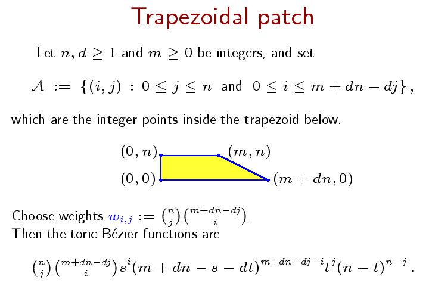

Linear precision for toric surface patches
H-C. Graf von Bothmer, K. Ranestad, and F. Sottile.
We classify the homogeneous polynomials in three variables whose toric polar linear
system defines a Cremona transformation.
This classification also includes, as a proper subset, the classification of toric
surface patches from
geometric modeling which have linear precision.
Besides the well-known tensor product patches and B\'ezier triangles, we identify a
toric patch with trapezoidal shape that has linear precision.

The manuscript in pdf.